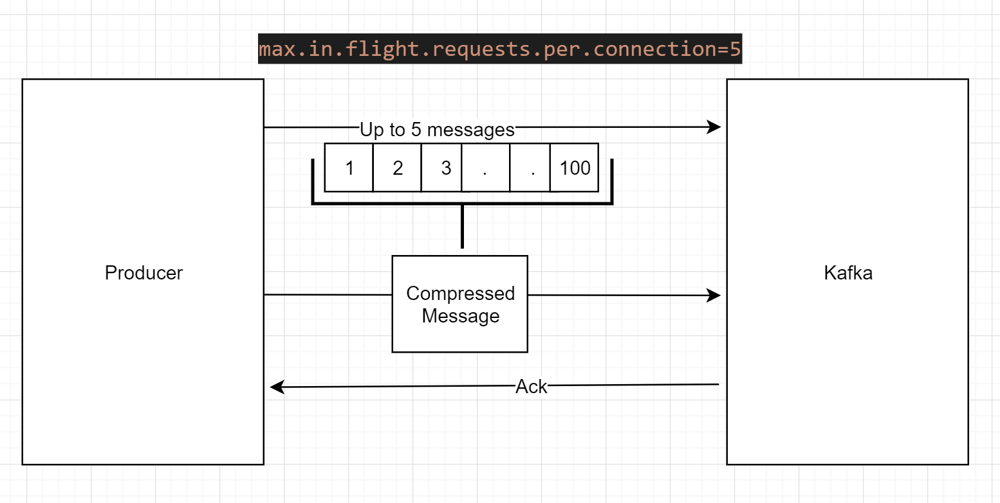
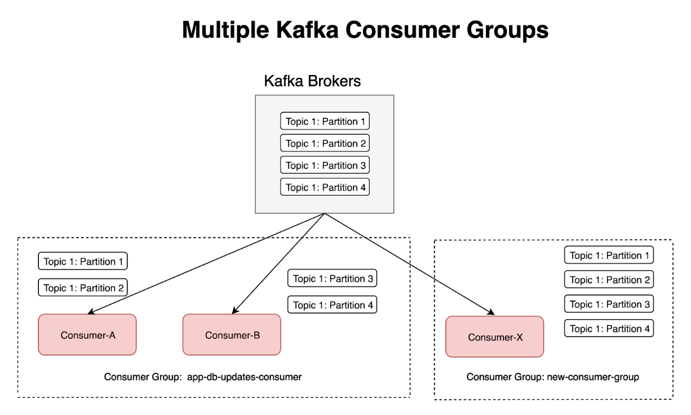

My notes for Kafka
Creating a topic #
bin/kafka-create-topics.sh --zookeeper zookeeper:2181 --create --topic first-topic --partitions 2 --replication-factor 2
or
bin/kafka-topics.sh --create --zookeeper zookeeper:2181 --replication-factor 3 --partitions 1 --topic my-repl-topic
Offset #
Offset is the number used per message in a partition.

Partitions and Replicas #
Partitions #
Partitions: A single piece of a Kafka topic. The number of partitions is configurable on a per topic basis. More partitions allow for great parallelism when reading from the topics. The number of partitions determines how many consumers you have in a consumer-group. For example, if a topic has 3 partitions, you can have 3 consumers in a consumer-group balancing consuming between the partitions. In this way you have a parallelism of 3. This partition number is somewhat hard to determine until you know how fast you are producing data and how fast you are consuming the data. If you have a topic that you know will be high volume, you will need to have more partitions. Note however that there cannot be more consumer instances in a consumer group (N consumers inside a consumer group) than partitions.
Replicas #
Replicas: These are copies of the partitions. They are never written to or read. Their only purpose is for data redundancy. If your topic has n replicas, n-1 brokers can fail before there is any data loss. Additionally, you cannot have a topic a replication factor greater than the number of brokers that you have. For example, you have 5 Kafka brokers, you could have a topic with a maximum replication factor of 5, and 5-1=4 brokers could go down before there is any data loss.

Geo-Replication #
Kafka MirrorMaker provides geo-replication support for your clusters. With MirrorMaker, messages are replicated across multiple datacenters or cloud regions. You can use this in active/passive scenarios for backup and recovery; or in active/active scenarios to place data closer to your users, or support data locality requirements.
Producers #
Producers publish data to the topics of their choice. The producer is responsible for choosing which record to assign to which partition within the topic. This can be done in a round-robin fashion simply to balance load or it can be done according to some semantic partition function (say based on some key in the record). More on the use of partitioning in a second!
Safe and High Throughput Producer #
Safe #
Some configurations that make producer safe.
For Kafka >= 0.11:
- enable.idempotence=true (producer level) + min.insync.replicas=2 (broker/topic level)
- Implies acks=all,retries=MAX_INT,max.in.flight.requests.per.connection=5 (default)
- While keeping ordering guarantees and improving performance!
Safe producer may impact throughput and latency.
High Throughput #
- For
COMPRESSIONwe can choose betweennone(default),snappy,lz4andgzip - For
LINGER_MSwe can wait for20 msmeanwhile it collects the message and compress - For
BATCH_SIZEwe can use use up to32 KBbatch size

Queue Vs Pub/Sub #
Messaging traditionally has two models: queuing and publish-subscribe. In a queue, a pool of consumers may read from a server and each record goes to one of them; in publish-subscribe the record is broadcast to all consumers. Each of these two models has a strength and a weakness. The strength of queuing is that it allows you to divide up the processing of data over multiple consumer instances, which lets you scale your processing. Unfortunately, queues aren’t multi-subscriber—once one process reads the data it’s gone. Publish-subscribe allows you broadcast data to multiple processes, but has no way of scaling processing since every message goes to every subscriber.
The advantage of Kafka’s model is that every topic has both these properties—it can scale processing and is also multi-subscriber—there is no need to choose one or the other. Through the concept of consumer group it’s easy to have both of them.
Kafka as a Storage System #
Data written to Kafka is written to disk and replicated for fault-tolerance. Kafka allows producers to wait on acknowledgement so that a write isn’t considered complete until it is fully replicated and guaranteed to persist even if the server written to fails.
Consumer Group #
When to use the same consumer group?
Consumers should be part of the same group, when the consumer performing an operation needs to be scaled up to process in parallel. Consumers part of the same group would be assigned with different partitions. As said before, no two consumers of the same group-id would get assigned to the same partition. Hence, each consumer part of a group would be processing different data than the other consumers within the same group. Leading to parallel processing. This is one of the ways suggested by Kafka to achieve parallel processing in consumers.

How would the offsets be maintained for consumers of different groups?
Offset, an indicator of how many messages has been read by a consumer, would be maintained per consumer group-id and partition. When there are two different consumer groups, 2 different offsets would be maintained per partition. Consumers of different consumer groups can resume/pause independent of the other consumer groups. Hence, leaving no dependency between the consumers of different groups.
Q. What if consumer-B goes down?
A. Kafka will do rebalancing and it would assign all the four partitions to consumer-A.
Q. What if new consumers, consumer-C and consumer-D starts consuming with the same group-id “app-db-updates-consumer”?
A. Kafka will do rebalancing again and it would assign each consumer with one partition equally.
Q. What if a new consumer, consumer-E joins with the same group-id “app-db-updates-consumer”. This totals to 5 consumers, where the partitions are 4?
A. Kafka will assign 4 consumers with 1 partition each and one consumer out of 5 will be idle.
Q. Can Kafka assign the same partition to two consumers?
A. Kafka can’t assign the same partition to two consumers within the same group. What about different consumer groups then? Partitions are only divided among the consumers of same group. This means Kafka will assign the same partitions to two consumers of different groups.
Q. What is the optimum number of consumers within the same group?
A. Number of consumers within a group can at max be as many number of partitions. Kafka can at max assign one partition to one consumer. If there are more number of consumers than the partitions, Kafka would fall short of the partitions to assign to the consumers. Not all the consumers of the group would get assigned to a partition and hence some of the consumers of the group would be idle.
Stream API #
The messages sent to the Stream API are key and value (key can be string and value a counter or integer).
Kafka Connect #
Can connect with relational database to mirror data from them (examples are Oracle DB, SQL Server, MySql, Postgre, syslog), also can sink back to them (examples are Hadoop, elasticsearch, S3, Google BigQuery, Oracle, Postgre)
Kafka Stream #
KStream and KTable #
KStream is where we receive a sequence of events, like ATM events, clickpages and visits to a web page.
KTable is the last update made by these events.
So in a system of payments between banks.
Supposing Bob has $200 in his account and Monica has $50.
We receive an event where Bob is sending $100 to Monica, after that, Monica sends back $50 to Bob because he made a mistake.
So 2 events will be received:
- Bob sends $100 to Monica (KTable will show that Bob will have $100 while Monica will have $150)
- Monica sends back $50 to Bob (KTable will show that Bob will have $150 and Monica will have $100)
KStream will have the changelog above while KTable is the actual state.
If we do KSQL into KStream we can see all the changelog since the beginning, while on KTable will show the most updated situation of the client.
SerDe (Avro) #
We can use Ser (Serialize) De (Deserialize) to convert bytes of the record to a specific type. For java interpret and create an java object easiely.
Strategy Consumer #
Message Delivery Guarantees #
- At most once - Messages may be lost but are never redelivered
- At least once - Messages are never lost but may be redelivered
- Exactly once - this is what people actually want, each message is delivered once and only once
Let’s say the consumer reads some messages – it has several options for processing the messages and updating its position.
-
It can read the messages, then save its position in the log, and finally process the messages. In this case there is a possibility that the consumer process crashes after saving its position but before saving the output of its message processing. In this case the process that took over processing would start at the saved position even though a few messages prior to that position had not been processed. This corresponds to “at-most-once” semantics as in the case of a consumer failure messages may not be processed.
-
It can read the messages, process the messages, and finally save its position. In this case there is a possibility that the consumer process crashes after processing messages but before saving its position. In this case when the new process takes over the first few messages it receives will already have been processed. This corresponds to the “at-least-once” semantics in the case of consumer failure. In many cases messages have a primary key and so the updates are idempotent (receiving the same message twice just overwrites a record with another copy of itself).
References #
what is difference between partition and replica of a topic in kafka cluster